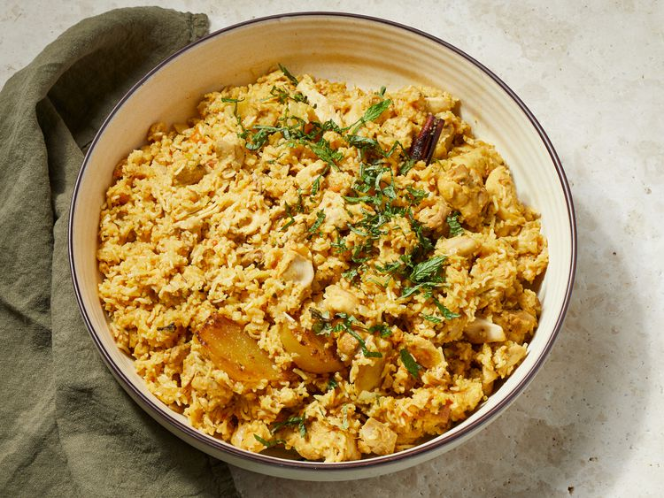

Chicken Biryani

Description
Chicken biryani is a delicious Pakistani/Indian rice dish that's typically reserved for special occasions such as weddings, parties, or holidays such as Ramadan. It has a lengthy preparation, but the work is definitely worth it. For biryani, basmati rice is the ideal variety to use.
Ingredients
- 4 tablespoons vegetable oil, divided
- 4 small potatoes, peeled and halved
- 1 pound basmati rice
- 1 large onion, diced
- 3 whole cloves
Steps
- Gather all ingredients.
- Heat 2 tablespoons of oil in a large skillet. Fry potatoes in hot oil until lightly browned, about 3 to 5 minutes. Remove to a paper towel-lined plate to drain; set aside.
- Add remaining 2 tablespoons of oil to the skillet. Add onions, garlic, and fresh ginger; cook and stir until onion is soft and golden. Add tomatoes, salt, cumin, chili powder, pepper, and turmeric; cook, stirring constantly, for 5 minutes.
- Add chicken mixture and potatoes; stir gently to combine. Bring to a boil.
- Reduce heat to very low, cover with a tight-fitting lid, and steam for 20 minutes without lifting the lid or stirring.
- Spoon biryani onto a warm serving dish.
Return to main page